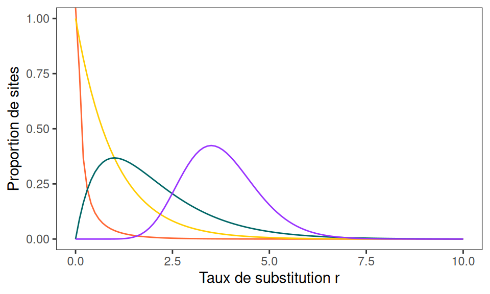
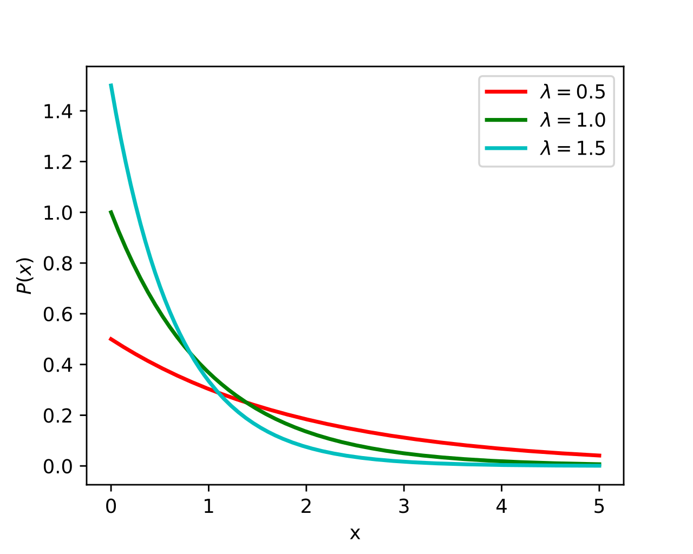
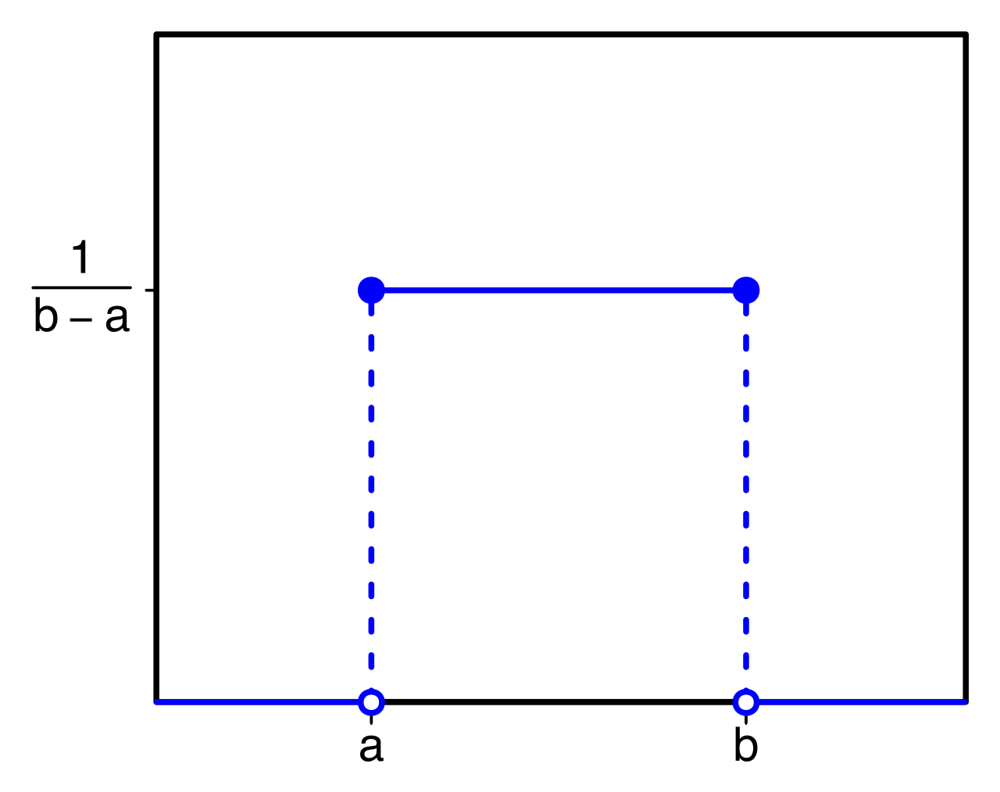
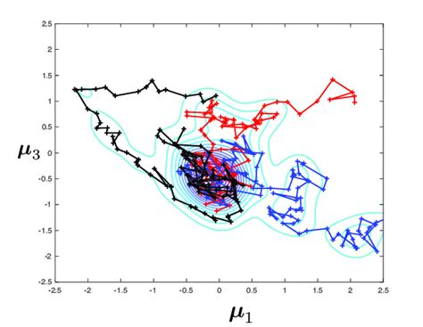
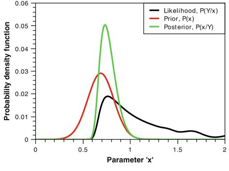
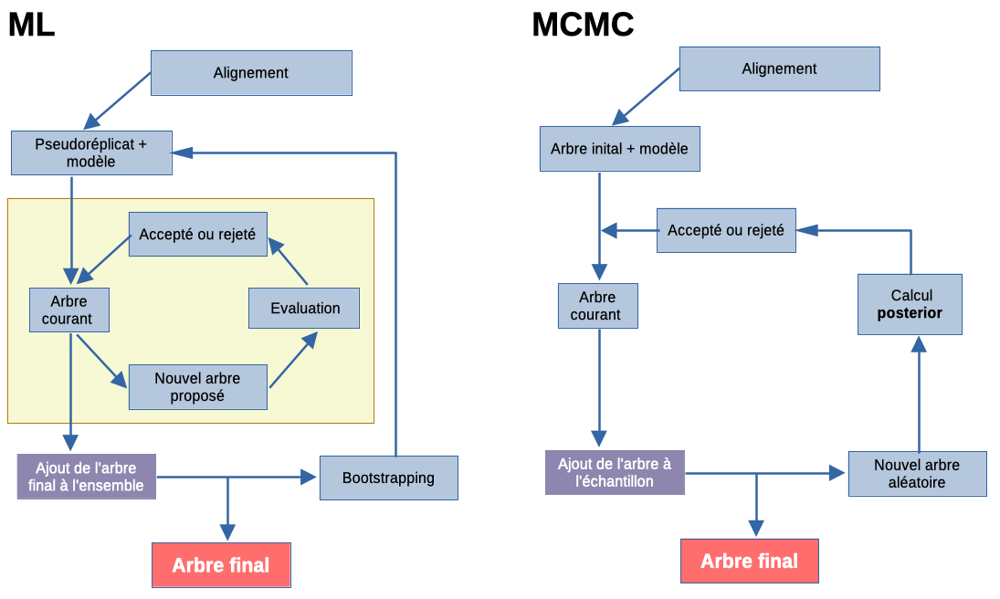
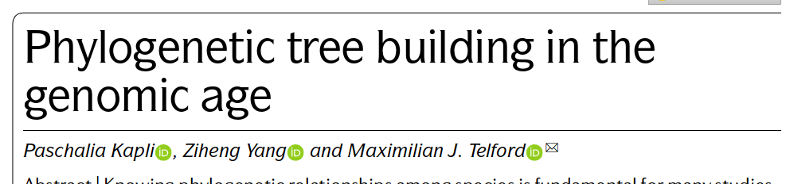
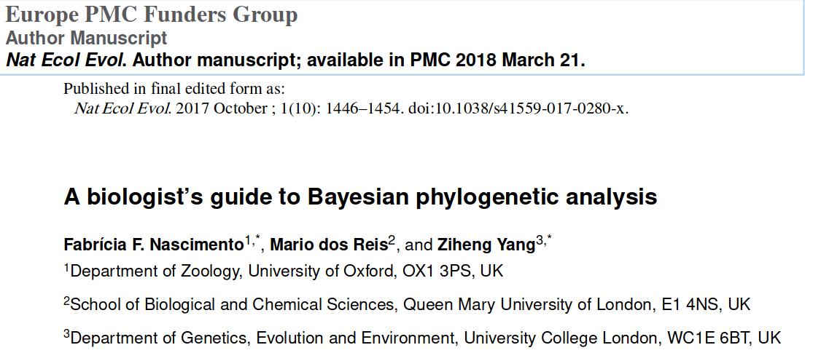

Introduction aux méthodes phylogénétiques
Maximum likelihood & Bayesian inference
Sébastien Guyader
13 décembre 2023Différences avec les approches classiques
Approches “classiques” (UPGMA, NJ, ME…)
basées sur matrices de distances 2-à-2
minimisation d’un critère (distances, longueur de l’arbre)
avantages : algorithmes et heuristiques rapides
inconvénients :
les distances ne reflètent pas toujours les vraies distances évolutives (substitutions multiples, homoplasie…)
n’évaluent qu’une seule topologie (1 seul arbre)
Approches “modernes” (ML et BI)
La construction de l’arbre phylogénétique ne repose pas sur une matrice des distances (mais une matrice peut être obtenue)
Les deux approches sont basées sur des modèles d’évolution des séquences et le test d’hypothèses (probabilités)
Approches de calcul plus complexes (et gourmandes) :
- ML : recherche dans l’espace des arbres possibles l’arbre qui maximise la fonction de vraisemblance ; pas d’interprétation probabilistique directe (quelle incertitude sur l’estimation de l’arbre et des paramètres ?)
- BI : exploration de l’espace par MCMC ; permet d’obtenir une mesure probabilistique de tous les paramètres
Maximum Likelihood & Bayesian Inference
Maximum Likelihood (ML)
Objectif : chercher l’arbre qui explique le mieux les données observées :
\(P(Seq|Arbre) = \mathcal{L}(h|data)\)
On estime les valeurs de nombreux paramètres selon le modèle évolutif choisi :
- modèle de sites (fréquences, taux de substitutions, hétérogénéité des taux…)
- et l’arbre lui-même !
Pour trouver la meilleure topologie, on maximise la fonction vraisemblance
Pour obtenir une mesure de confiance du résultat, on procède à un bootstrapping (comme pour les approches classiques) :
ré-échantillonnage → \(X\) pseudoréplicats → \(X\) arbres → % où chaque branche est retrouvée
Bayesian Inference (BI)
La méthode bayésienne est issue des travaux des pasteurs Thomas Bayes et Richard Price, puis par Pierre-Simon Laplace, au milieu du XVIIIe siècle.
Il a fallu attendre le début des années 2000 pour que le théorème de Bayes prenne son importance actuelle.

Bayesian Inference (BI)
Le théorème de Bayes
Formulation la plus connue
\[ P(A❘B)=\frac{ P(B❘A) \times P(A) }{ P(B) } \qquad(1)\]
permet de déterminer la probabilité d’un évènement (ici \(A\)) à partir d’un autre évènement qui s’est réalisé (ici \(B\))
on peut calculer la probabilité d’un évènement en tenant compte d’informations déjà connues au niveau du système étudié
l’information peut être mise à jour avec de nouvelles données
dérive de la théorie des probabilités conditionnelles
Bayesian Inference (BI)
Objectif : chercher l’arbre qui maximise la probabilité d’observer l’arbre connaissant les données :
\(P(Arbre|Seq)\)
On estime les valeurs de nombreux paramètres selon le modèle évolutif choisi :
- substitutions (taux, hétérogénéités…) et l’arbre lui-même
- on donne une valeur initiale et une distribution (connaissance a priori, ou prior)
Exemples de priors
 


Bayesian Inference (BI)
Algorithme Markov Chain Monte Carlo (MCMC) pour explorer de l’espace :
l’algorithme échantillonne dans les priors
les chaînes de markov explorent l’espace des paramètres en essayant d’aller vers les points qui améliorent la vraisemblance

à chaque étape la distribution postérieure est affinée à partir de la prior et grâce à la vraisemblance mesurée
on obtient des distributions postérieures (arbre et paramètres) : probabilité + intervalle de crédibilité
pas besoin de boostrapping
Bayesian Inference (BI)
Le plus gros intérêt de l’approche bayésienne : implémentation de modèles complexes
couplage avec des métadonnées : géographie, espèce hôte, temps…
permet le test d’hypothèses dans un environnement statistique solide (temps de divergence, racine…)
ex : phylogéographie
Comparaison schématique

Modèles d’évolution
Décrivent les substitutions et leurs taux
\[ \tiny{ Q={ \begin{pmatrix} -\mu _{A}&\mu _{AG}&\mu _{AC}&\mu _{AT}\\ \mu _{GA}&-\mu _{G}&\mu _{GC}&\mu _{GT}\\ \mu _{CA}&\mu _{CG}&-\mu _{C}&\mu _{CT}\\ \mu _{TA}&\mu _{TG}&\mu _{TC}&-\mu _{T} \end{pmatrix} } } \]
transitions
transversions
\[ \tiny{ JC69 \longrightarrow Q = { \begin{pmatrix}{*}&{\mu \over 4}&{\mu \over 4}&{\mu \over 4}\\{\mu \over 4}&{*}&{\mu \over 4}&{\mu \over 4}\\{\mu \over 4}&{\mu \over 4}&{*}&{\mu \over 4}\\{\mu \over 4}&{\mu \over 4}&{\mu \over 4}&{*}\end{pmatrix} } } \]
\[ \tiny{ HKY85 \longrightarrow Q = { \begin{pmatrix}{*}&{\kappa \pi _{G}}&{\pi _{C}}&{\pi _{T}}\\{\kappa \pi _{A}}&{*}&{\pi _{C}}&{\pi _{T}}\\{\pi _{A}}&{\pi _{G}}&{*}&{\kappa \pi _{T}}\\{\pi _{A}}&{\pi _{G}}&{\kappa \pi _{C}}&{*}\end{pmatrix} } } \]
\[ \tiny{ GTR \longrightarrow Q = { \begin{pmatrix}{-(\alpha \pi _{G}+\beta \pi _{C}+\gamma \pi _{T})}&{\alpha \pi _{G}}&{\beta \pi _{C}}&{\gamma \pi _{T}}\\{\alpha \pi _{A}}&{-(\alpha \pi _{A}+\delta \pi _{C}+\epsilon \pi _{T})}&{\delta \pi _{C}}&{\epsilon \pi _{T}}\\{\beta \pi _{A}}&{\delta \pi _{G}}&{-(\beta \pi _{A}+\delta \pi _{G}+\eta \pi _{T})}&{\eta \pi _{T}}\\{\gamma \pi _{A}}&{\epsilon \pi _{G}}&{\eta \pi _{C}}&{-(\gamma \pi _{A}+\epsilon \pi _{G}+\eta \pi _{C})}\end{pmatrix} } } \]
Modèles d’évolution
- Réversibilité :
- la plupart des modèles de substitutions sont réversibles dans le temps : on obtient un arbre non enraciné (pas de direction de l’évolution, on peut mettre n’importe quel taxon à la racine)
- certains modèles sont non-réversibles : l’évolution va dans une direction, on obtient un arbre avec une racine identifiée
- Si les séquences étudiées sont codantes :
- on peut les traduire en protéines, et utiliser un modèle basé sur des matrices d’échange entre aminoacides (Blosum62, Dayhoff, JTT…)
- on peut définir le codon comme unité de base
Modèles d’évolution
- Hétérogénéité :
concerne les taux de substitutions, les fréquences des caractères (nucléotides…)
entre sites (zones conservées, sous pression sélective…) : distribution gamma
également entre taxa (vitesses d’évolution différentes)
Exemples de logiciels
IQ-TREE (ML)
logiciel récent, en développement actif, très complet
points forts :
algo. stochastique très efficient pour l’inférence ML d’arbres phylogénétiques
intègre ModelFinder pour aider au choix du modèle
intègre une alternative au bootstrapping pour une mesure fiable et rapide du support des branches : UFBoot (Ultrafast Botstrap Approximation) et d’autres mesures
gère de gros jeux de données (milliers de séquences / millions de sites)
disponible sur Galaxy Karubionet !!!
Autres logiciels ML
PhyML
RAxML
FastTree 2
réécriture de BEAST 1.x pour plus de modularité, formé plusieurs programmes :
BEAUTi → importation les données, design de l’analyse, génération du fichier contrôle XML
BEAST → programme principal, procède à l’analyse MCMC à partir du fichier XML
TreeAnnotator → assemble tous les arbres issus de BEAST
TreeStat → obtention de stats et infos sur les arbres
LogCombiner → utilitaire qui réalise des opérations sur les sorties stats (logs) de BEAST
nombreux modules
programmes connexes mais très utiles :
Tracer → outil graphique d’exploration des sorties de BEAST (diagnostic de convergence, ESS…)
FigTree → programme graphique pour visualiser des arbres phylogénétiques
seulement BEAST 1.x sur Galaxy…
Autres logiciels BI
MrBayes
RevBayes
MCMCTree
Phylobase
Lecture



13 décembre 2023 / Formation Karubionet / Sébastien Guyader
Comment choisir son modèle évolutif ?
Cas simple : on sait quel modèle évolutif produit nos séquences
→ on n’a que les paramètres à estimer
Cas compliqué : on ne connait pas le modèle